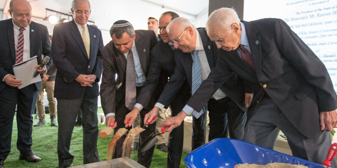

On October 30, 2017, the Mandel community gathered to lay the cornerstone for the beautiful new Mandel building in Jerusalem. In recognition of the Mandel Foundation's longstanding contribution to the city of Jerusalem and the State of Israel, the festive ceremony was attended by President Reuven (Ruvi) Rivlin, President of the State of Israel;
MK Yuli Yoel Edelstein, Speaker of the Knesset;
MK Zeev Elkin, Minister of Environmental Protection and Minister of Jerusalem and Heritage; and
Mr. Nir Barkat, Mayor of Jerusalem.Mr. Morton L. Mandel, Chairman and CEO of the Mandel Foundation,Professor Jehuda Reinharz, President of the Mandel Foundation, and
Mr. Moshe Vigdor, Director General of the Mandel Foundation–Israel, represented the Foundation at the event, which brought together the faculty, staff, fellows, and graduates of the Mandel leadership programs in Israel.
“The laying of the cornerstone for the new home of the leadership programs of the Mandel Foundation here in Jerusalem is a day of celebration,” said President Reuven (Ruvi) Rivlin. “On this day, we give concrete expression to the deep connection between Jerusalem – the beating heart of the State of Israel and the Jewish people – and the Jack, Joseph and Morton Mandel Foundation, a foundation that is an incubator of quality, excellence, and leadership,” he continued. “In the 25 years of its operation, the Mandel Foundation has cultivated in Israel a generation of leaders and of educational and social entrepreneurs from all segments of Israeli society. This new building will continue to provide a base for the activities of this important foundation.”
The new building will stand at the entrance to the Jerusalem Botanical Gardens, adjacent to the Hebrew University of Jerusalem’s Givat Ram campus. Its construction is expected to take around two years.

“There is no better way for the Mandel Foundation to express its commitment to the State of Israel and its values than to build a home in Jerusalem, the capital of Israel, in the place where we now stand,” said Professor Jehuda Reinharz, President of the Mandel Foundation. “Our hearts are overflowing with pride and joy that we have reached this day. On this occasion, I congratulate in particular Mr. Morton Mandel: a man of vision and of action; a man who makes plans and carries them out; a true Zionist who loves the State of Israel and is fully committed to it.”
Mr. Morton Mandel, Chairman and CEO of the Mandel Foundation, began by noting how meaningful this day was for him and expressing his appreciation for the thanks received from all those in attendance. Mr. Mandel noted that many years ago, he began to dream of making the world a better place. This idea was implanted him as a child by his mother, who taught him and his siblings that “if you give a penny to charity, you will get a dollar back." That, according to Mr. Mandel, is exactly what happened. Mr. Mandel explained that while the Mandel Foundation began with a focus on the United States, it soon broadened to include Israel, and that he, like President Rivlin, sees himself as a Jerusalemite. Addressing the graduates, he said: "It is you, the graduates of our programs, who are doing my work… and the work that you are doing is dazzling.” Mr. Mandel expressed the hope that the new building, which reflects the Mandel Foundation's permanent commitment to Israel and Jerusalem, will fulfill our dreams and our expectations.
“I see many familiar faces here today,” said Minister Zeev Elkin, “of wonderful people whom the Mandel Foundation touched at different stages of their lives, giving them a great boost, resulting in so many important developments for the State of Israel and for the entire Jewish world…. I would like to express my thanks to the Mandel Foundation for all the amazing things that you have done. But even more importantly, on behalf of the government of Israel, I wish to thank you for all the wonderful things that you are yet to do for the State of Israel and the entire Jewish people. We are proud to be your partner in the wonderful endeavor of constructing this building.”
Mr. Nir Barkat, Mayor of Jerusalem, also offered thanks to Morton Mandel. “The foundation that you are putting here in this building is for generations and generations to come,” he said to the Chairman and CEO of the Mandel Foundation. “You, Mr. Mandel, are not thinking about today; you are thinking long, long term. In many respects, you are a role model for us all. I want to thank you for your warm relationship with me, as mayor, and with the city of Jerusalem.”
“As someone who has witnessed the Mandel Foundation’s work firsthand,” said Speaker of the Knesset Edelstein, himself a graduate of the Mandel Foundation’s Jerusalem Fellows Program. “I am fully confident that this is more than a nice groundbreaking ceremony. It is the launch of one of the most beautiful and important projects for us in the State of Israel – for our society, our education, and for a thousand and one other aspects of life,” he added. “Thank you again for everything you have been doing, and for all that you will be doing, I am sure, for many more years.”
Also present at the ceremony were Knesset opposition leader
MK Isaac Herzog, University presidents, many dignitaries and officials, and Mandel fellows, graduates, faculty, and staff members.
{kind=link}